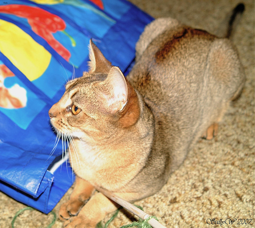
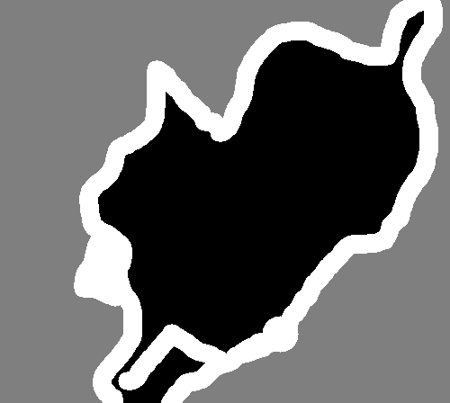
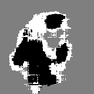

None
Image segmentation with a U-Net-like architecture
Author: fchollet
Date created: 2019/03/20
Last modified: 2020/04/20
Description: Image segmentation model trained from scratch on the Oxford Pets dataset.

Download the data
!!wget https://www.robots.ox.ac.uk/~vgg/data/pets/data/images.tar.gz
!!wget https://www.robots.ox.ac.uk/~vgg/data/pets/data/annotations.tar.gz
!
!curl -O https://thor.robots.ox.ac.uk/datasets/pets/images.tar.gz
!curl -O https://thor.robots.ox.ac.uk/datasets/pets/annotations.tar.gz
!
!tar -xf images.tar.gz
!tar -xf annotations.tar.gz
% Total % Received % Xferd Average Speed Time Time Time Current
Dload Upload Total Spent Left Speed
100 755M 100 755M 0 0 21.3M 0 0:00:35 0:00:35 --:--:-- 22.2M
% Total % Received % Xferd Average Speed Time Time Time Current
Dload Upload Total Spent Left Speed
100 18.2M 100 18.2M 0 0 7977k 0 0:00:02 0:00:02 --:--:-- 7974k
Prepare paths of input images and target segmentation masks
import os
input_dir = "images/"
target_dir = "annotations/trimaps/"
img_size = (160, 160)
num_classes = 3
batch_size = 32
input_img_paths = sorted(
[
os.path.join(input_dir, fname)
for fname in os.listdir(input_dir)
if fname.endswith(".jpg")
]
)
target_img_paths = sorted(
[
os.path.join(target_dir, fname)
for fname in os.listdir(target_dir)
if fname.endswith(".png") and not fname.startswith(".")
]
)
print("Number of samples:", len(input_img_paths))
for input_path, target_path in zip(input_img_paths[:10], target_img_paths[:10]):
print(input_path, "|", target_path)
Number of samples: 7390
images/Abyssinian_1.jpg | annotations/trimaps/Abyssinian_1.png
images/Abyssinian_10.jpg | annotations/trimaps/Abyssinian_10.png
images/Abyssinian_100.jpg | annotations/trimaps/Abyssinian_100.png
images/Abyssinian_101.jpg | annotations/trimaps/Abyssinian_101.png
images/Abyssinian_102.jpg | annotations/trimaps/Abyssinian_102.png
images/Abyssinian_103.jpg | annotations/trimaps/Abyssinian_103.png
images/Abyssinian_104.jpg | annotations/trimaps/Abyssinian_104.png
images/Abyssinian_105.jpg | annotations/trimaps/Abyssinian_105.png
images/Abyssinian_106.jpg | annotations/trimaps/Abyssinian_106.png
images/Abyssinian_107.jpg | annotations/trimaps/Abyssinian_107.png
What does one input image and corresponding segmentation mask look like?
from IPython.display import Image, display
from keras.utils import load_img
from PIL import ImageOps
# Display input image #7
display(Image(filename=input_img_paths[9]))
# Display auto-contrast version of corresponding target (per-pixel categories)
img = ImageOps.autocontrast(load_img(target_img_paths[9]))
display(img)


Prepare dataset to load & vectorize batches of data
import keras
import numpy as np
from tensorflow import data as tf_data
from tensorflow import image as tf_image
from tensorflow import io as tf_io
def get_dataset(
batch_size,
img_size,
input_img_paths,
target_img_paths,
max_dataset_len=None,
):
"""Returns a TF Dataset."""
def load_img_masks(input_img_path, target_img_path):
input_img = tf_io.read_file(input_img_path)
input_img = tf_io.decode_png(input_img, channels=3)
input_img = tf_image.resize(input_img, img_size)
input_img = tf_image.convert_image_dtype(input_img, "float32")
target_img = tf_io.read_file(target_img_path)
target_img = tf_io.decode_png(target_img, channels=1)
target_img = tf_image.resize(target_img, img_size, method="nearest")
target_img = tf_image.convert_image_dtype(target_img, "uint8")
# Ground truth labels are 1, 2, 3. Subtract one to make them 0, 1, 2:
target_img -= 1
return input_img, target_img
# For faster debugging, limit the size of data
if max_dataset_len:
input_img_paths = input_img_paths[:max_dataset_len]
target_img_paths = target_img_paths[:max_dataset_len]
dataset = tf_data.Dataset.from_tensor_slices((input_img_paths, target_img_paths))
dataset = dataset.map(load_img_masks, num_parallel_calls=tf_data.AUTOTUNE)
return dataset.batch(batch_size)
Prepare U-Net Xception-style model
from keras import layers
def get_model(img_size, num_classes):
inputs = keras.Input(shape=img_size + (3,))
### [First half of the network: downsampling inputs] ###
# Entry block
x = layers.Conv2D(32, 3, strides=2, padding="same")(inputs)
x = layers.BatchNormalization()(x)
x = layers.Activation("relu")(x)
previous_block_activation = x # Set aside residual
# Blocks 1, 2, 3 are identical apart from the feature depth.
for filters in [64, 128, 256]:
x = layers.Activation("relu")(x)
x = layers.SeparableConv2D(filters, 3, padding="same")(x)
x = layers.BatchNormalization()(x)
x = layers.Activation("relu")(x)
x = layers.SeparableConv2D(filters, 3, padding="same")(x)
x = layers.BatchNormalization()(x)
x = layers.MaxPooling2D(3, strides=2, padding="same")(x)
# Project residual
residual = layers.Conv2D(filters, 1, strides=2, padding="same")(
previous_block_activation
)
x = layers.add([x, residual]) # Add back residual
previous_block_activation = x # Set aside next residual
### [Second half of the network: upsampling inputs] ###
for filters in [256, 128, 64, 32]:
x = layers.Activation("relu")(x)
x = layers.Conv2DTranspose(filters, 3, padding="same")(x)
x = layers.BatchNormalization()(x)
x = layers.Activation("relu")(x)
x = layers.Conv2DTranspose(filters, 3, padding="same")(x)
x = layers.BatchNormalization()(x)
x = layers.UpSampling2D(2)(x)
# Project residual
residual = layers.UpSampling2D(2)(previous_block_activation)
residual = layers.Conv2D(filters, 1, padding="same")(residual)
x = layers.add([x, residual]) # Add back residual
previous_block_activation = x # Set aside next residual
# Add a per-pixel classification layer
outputs = layers.Conv2D(num_classes, 3, activation="softmax", padding="same")(x)
# Define the model
model = keras.Model(inputs, outputs)
return model
# Build model
model = get_model(img_size, num_classes)
model.summary()
Model: "functional_1"
┏━━━━━━━━━━━━━━━━━━━━━┳━━━━━━━━━━━━━━━━━━━┳━━━━━━━━━┳━━━━━━━━━━━━━━━━━━━━━━┓ ┃ Layer (type) ┃ Output Shape ┃ Param # ┃ Connected to ┃ ┡━━━━━━━━━━━━━━━━━━━━━╇━━━━━━━━━━━━━━━━━━━╇━━━━━━━━━╇━━━━━━━━━━━━━━━━━━━━━━┩ │ input_layer │ (None, 160, 160, │ 0 │ - │ │ (InputLayer) │ 3) │ │ │ ├─────────────────────┼───────────────────┼─────────┼──────────────────────┤ │ conv2d (Conv2D) │ (None, 80, 80, │ 896 │ input_layer[0][0] │ │ │ 32) │ │ │ ├─────────────────────┼───────────────────┼─────────┼──────────────────────┤ │ batch_normalization │ (None, 80, 80, │ 128 │ conv2d[0][0] │ │ (BatchNormalizatio… │ 32) │ │ │ ├─────────────────────┼───────────────────┼─────────┼──────────────────────┤ │ activation │ (None, 80, 80, │ 0 │ batch_normalization… │ │ (Activation) │ 32) │ │ │ ├─────────────────────┼───────────────────┼─────────┼──────────────────────┤ │ activation_1 │ (None, 80, 80, │ 0 │ activation[0][0] │ │ (Activation) │ 32) │ │ │ ├─────────────────────┼───────────────────┼─────────┼──────────────────────┤ │ separable_conv2d │ (None, 80, 80, │ 2,400 │ activation_1[0][0] │ │ (SeparableConv2D) │ 64) │ │ │ ├─────────────────────┼───────────────────┼─────────┼──────────────────────┤ │ batch_normalizatio… │ (None, 80, 80, │ 256 │ separable_conv2d[0]… │ │ (BatchNormalizatio… │ 64) │ │ │ ├─────────────────────┼───────────────────┼─────────┼──────────────────────┤ │ activation_2 │ (None, 80, 80, │ 0 │ batch_normalization… │ │ (Activation) │ 64) │ │ │ ├─────────────────────┼───────────────────┼─────────┼──────────────────────┤ │ separable_conv2d_1 │ (None, 80, 80, │ 4,736 │ activation_2[0][0] │ │ (SeparableConv2D) │ 64) │ │ │ ├─────────────────────┼───────────────────┼─────────┼──────────────────────┤ │ batch_normalizatio… │ (None, 80, 80, │ 256 │ separable_conv2d_1[… │ │ (BatchNormalizatio… │ 64) │ │ │ ├─────────────────────┼───────────────────┼─────────┼──────────────────────┤ │ max_pooling2d │ (None, 40, 40, │ 0 │ batch_normalization… │ │ (MaxPooling2D) │ 64) │ │ │ ├─────────────────────┼───────────────────┼─────────┼──────────────────────┤ │ conv2d_1 (Conv2D) │ (None, 40, 40, │ 2,112 │ activation[0][0] │ │ │ 64) │ │ │ ├─────────────────────┼───────────────────┼─────────┼──────────────────────┤ │ add (Add) │ (None, 40, 40, │ 0 │ max_pooling2d[0][0], │ │ │ 64) │ │ conv2d_1[0][0] │ ├─────────────────────┼───────────────────┼─────────┼──────────────────────┤ │ activation_3 │ (None, 40, 40, │ 0 │ add[0][0] │ │ (Activation) │ 64) │ │ │ ├─────────────────────┼───────────────────┼─────────┼──────────────────────┤ │ separable_conv2d_2 │ (None, 40, 40, │ 8,896 │ activation_3[0][0] │ │ (SeparableConv2D) │ 128) │ │ │ ├─────────────────────┼───────────────────┼─────────┼──────────────────────┤ │ batch_normalizatio… │ (None, 40, 40, │ 512 │ separable_conv2d_2[… │ │ (BatchNormalizatio… │ 128) │ │ │ ├─────────────────────┼───────────────────┼─────────┼──────────────────────┤ │ activation_4 │ (None, 40, 40, │ 0 │ batch_normalization… │ │ (Activation) │ 128) │ │ │ ├─────────────────────┼───────────────────┼─────────┼──────────────────────┤ │ separable_conv2d_3 │ (None, 40, 40, │ 17,664 │ activation_4[0][0] │ │ (SeparableConv2D) │ 128) │ │ │ ├─────────────────────┼───────────────────┼─────────┼──────────────────────┤ │ batch_normalizatio… │ (None, 40, 40, │ 512 │ separable_conv2d_3[… │ │ (BatchNormalizatio… │ 128) │ │ │ ├─────────────────────┼───────────────────┼─────────┼──────────────────────┤ │ max_pooling2d_1 │ (None, 20, 20, │ 0 │ batch_normalization… │ │ (MaxPooling2D) │ 128) │ │ │ ├─────────────────────┼───────────────────┼─────────┼──────────────────────┤ │ conv2d_2 (Conv2D) │ (None, 20, 20, │ 8,320 │ add[0][0] │ │ │ 128) │ │ │ ├─────────────────────┼───────────────────┼─────────┼──────────────────────┤ │ add_1 (Add) │ (None, 20, 20, │ 0 │ max_pooling2d_1[0][… │ │ │ 128) │ │ conv2d_2[0][0] │ ├─────────────────────┼───────────────────┼─────────┼──────────────────────┤ │ activation_5 │ (None, 20, 20, │ 0 │ add_1[0][0] │ │ (Activation) │ 128) │ │ │ ├─────────────────────┼───────────────────┼─────────┼──────────────────────┤ │ separable_conv2d_4 │ (None, 20, 20, │ 34,176 │ activation_5[0][0] │ │ (SeparableConv2D) │ 256) │ │ │ ├─────────────────────┼───────────────────┼─────────┼──────────────────────┤ │ batch_normalizatio… │ (None, 20, 20, │ 1,024 │ separable_conv2d_4[… │ │ (BatchNormalizatio… │ 256) │ │ │ ├─────────────────────┼───────────────────┼─────────┼──────────────────────┤ │ activation_6 │ (None, 20, 20, │ 0 │ batch_normalization… │ │ (Activation) │ 256) │ │ │ ├─────────────────────┼───────────────────┼─────────┼──────────────────────┤ │ separable_conv2d_5 │ (None, 20, 20, │ 68,096 │ activation_6[0][0] │ │ (SeparableConv2D) │ 256) │ │ │ ├─────────────────────┼───────────────────┼─────────┼──────────────────────┤ │ batch_normalizatio… │ (None, 20, 20, │ 1,024 │ separable_conv2d_5[… │ │ (BatchNormalizatio… │ 256) │ │ │ ├─────────────────────┼───────────────────┼─────────┼──────────────────────┤ │ max_pooling2d_2 │ (None, 10, 10, │ 0 │ batch_normalization… │ │ (MaxPooling2D) │ 256) │ │ │ ├─────────────────────┼───────────────────┼─────────┼──────────────────────┤ │ conv2d_3 (Conv2D) │ (None, 10, 10, │ 33,024 │ add_1[0][0] │ │ │ 256) │ │ │ ├─────────────────────┼───────────────────┼─────────┼──────────────────────┤ │ add_2 (Add) │ (None, 10, 10, │ 0 │ max_pooling2d_2[0][… │ │ │ 256) │ │ conv2d_3[0][0] │ ├─────────────────────┼───────────────────┼─────────┼──────────────────────┤ │ activation_7 │ (None, 10, 10, │ 0 │ add_2[0][0] │ │ (Activation) │ 256) │ │ │ ├─────────────────────┼───────────────────┼─────────┼──────────────────────┤ │ conv2d_transpose │ (None, 10, 10, │ 590,080 │ activation_7[0][0] │ │ (Conv2DTranspose) │ 256) │ │ │ ├─────────────────────┼───────────────────┼─────────┼──────────────────────┤ │ batch_normalizatio… │ (None, 10, 10, │ 1,024 │ conv2d_transpose[0]… │ │ (BatchNormalizatio… │ 256) │ │ │ ├─────────────────────┼───────────────────┼─────────┼──────────────────────┤ │ activation_8 │ (None, 10, 10, │ 0 │ batch_normalization… │ │ (Activation) │ 256) │ │ │ ├─────────────────────┼───────────────────┼─────────┼──────────────────────┤ │ conv2d_transpose_1 │ (None, 10, 10, │ 590,080 │ activation_8[0][0] │ │ (Conv2DTranspose) │ 256) │ │ │ ├─────────────────────┼───────────────────┼─────────┼──────────────────────┤ │ batch_normalizatio… │ (None, 10, 10, │ 1,024 │ conv2d_transpose_1[… │ │ (BatchNormalizatio… │ 256) │ │ │ ├─────────────────────┼───────────────────┼─────────┼──────────────────────┤ │ up_sampling2d_1 │ (None, 20, 20, │ 0 │ add_2[0][0] │ │ (UpSampling2D) │ 256) │ │ │ ├─────────────────────┼───────────────────┼─────────┼──────────────────────┤ │ up_sampling2d │ (None, 20, 20, │ 0 │ batch_normalization… │ │ (UpSampling2D) │ 256) │ │ │ ├─────────────────────┼───────────────────┼─────────┼──────────────────────┤ │ conv2d_4 (Conv2D) │ (None, 20, 20, │ 65,792 │ up_sampling2d_1[0][… │ │ │ 256) │ │ │ ├─────────────────────┼───────────────────┼─────────┼──────────────────────┤ │ add_3 (Add) │ (None, 20, 20, │ 0 │ up_sampling2d[0][0], │ │ │ 256) │ │ conv2d_4[0][0] │ ├─────────────────────┼───────────────────┼─────────┼──────────────────────┤ │ activation_9 │ (None, 20, 20, │ 0 │ add_3[0][0] │ │ (Activation) │ 256) │ │ │ ├─────────────────────┼───────────────────┼─────────┼──────────────────────┤ │ conv2d_transpose_2 │ (None, 20, 20, │ 295,040 │ activation_9[0][0] │ │ (Conv2DTranspose) │ 128) │ │ │ ├─────────────────────┼───────────────────┼─────────┼──────────────────────┤ │ batch_normalizatio… │ (None, 20, 20, │ 512 │ conv2d_transpose_2[… │ │ (BatchNormalizatio… │ 128) │ │ │ ├─────────────────────┼───────────────────┼─────────┼──────────────────────┤ │ activation_10 │ (None, 20, 20, │ 0 │ batch_normalization… │ │ (Activation) │ 128) │ │ │ ├─────────────────────┼───────────────────┼─────────┼──────────────────────┤ │ conv2d_transpose_3 │ (None, 20, 20, │ 147,584 │ activation_10[0][0] │ │ (Conv2DTranspose) │ 128) │ │ │ ├─────────────────────┼───────────────────┼─────────┼──────────────────────┤ │ batch_normalizatio… │ (None, 20, 20, │ 512 │ conv2d_transpose_3[… │ │ (BatchNormalizatio… │ 128) │ │ │ ├─────────────────────┼───────────────────┼─────────┼──────────────────────┤ │ up_sampling2d_3 │ (None, 40, 40, │ 0 │ add_3[0][0] │ │ (UpSampling2D) │ 256) │ │ │ ├─────────────────────┼───────────────────┼─────────┼──────────────────────┤ │ up_sampling2d_2 │ (None, 40, 40, │ 0 │ batch_normalization… │ │ (UpSampling2D) │ 128) │ │ │ ├─────────────────────┼───────────────────┼─────────┼──────────────────────┤ │ conv2d_5 (Conv2D) │ (None, 40, 40, │ 32,896 │ up_sampling2d_3[0][… │ │ │ 128) │ │ │ ├─────────────────────┼───────────────────┼─────────┼──────────────────────┤ │ add_4 (Add) │ (None, 40, 40, │ 0 │ up_sampling2d_2[0][… │ │ │ 128) │ │ conv2d_5[0][0] │ ├─────────────────────┼───────────────────┼─────────┼──────────────────────┤ │ activation_11 │ (None, 40, 40, │ 0 │ add_4[0][0] │ │ (Activation) │ 128) │ │ │ ├─────────────────────┼───────────────────┼─────────┼──────────────────────┤ │ conv2d_transpose_4 │ (None, 40, 40, │ 73,792 │ activation_11[0][0] │ │ (Conv2DTranspose) │ 64) │ │ │ ├─────────────────────┼───────────────────┼─────────┼──────────────────────┤ │ batch_normalizatio… │ (None, 40, 40, │ 256 │ conv2d_transpose_4[… │ │ (BatchNormalizatio… │ 64) │ │ │ ├─────────────────────┼───────────────────┼─────────┼──────────────────────┤ │ activation_12 │ (None, 40, 40, │ 0 │ batch_normalization… │ │ (Activation) │ 64) │ │ │ ├─────────────────────┼───────────────────┼─────────┼──────────────────────┤ │ conv2d_transpose_5 │ (None, 40, 40, │ 36,928 │ activation_12[0][0] │ │ (Conv2DTranspose) │ 64) │ │ │ ├─────────────────────┼───────────────────┼─────────┼──────────────────────┤ │ batch_normalizatio… │ (None, 40, 40, │ 256 │ conv2d_transpose_5[… │ │ (BatchNormalizatio… │ 64) │ │ │ ├─────────────────────┼───────────────────┼─────────┼──────────────────────┤ │ up_sampling2d_5 │ (None, 80, 80, │ 0 │ add_4[0][0] │ │ (UpSampling2D) │ 128) │ │ │ ├─────────────────────┼───────────────────┼─────────┼──────────────────────┤ │ up_sampling2d_4 │ (None, 80, 80, │ 0 │ batch_normalization… │ │ (UpSampling2D) │ 64) │ │ │ ├─────────────────────┼───────────────────┼─────────┼──────────────────────┤ │ conv2d_6 (Conv2D) │ (None, 80, 80, │ 8,256 │ up_sampling2d_5[0][… │ │ │ 64) │ │ │ ├─────────────────────┼───────────────────┼─────────┼──────────────────────┤ │ add_5 (Add) │ (None, 80, 80, │ 0 │ up_sampling2d_4[0][… │ │ │ 64) │ │ conv2d_6[0][0] │ ├─────────────────────┼───────────────────┼─────────┼──────────────────────┤ │ activation_13 │ (None, 80, 80, │ 0 │ add_5[0][0] │ │ (Activation) │ 64) │ │ │ ├─────────────────────┼───────────────────┼─────────┼──────────────────────┤ │ conv2d_transpose_6 │ (None, 80, 80, │ 18,464 │ activation_13[0][0] │ │ (Conv2DTranspose) │ 32) │ │ │ ├─────────────────────┼───────────────────┼─────────┼──────────────────────┤ │ batch_normalizatio… │ (None, 80, 80, │ 128 │ conv2d_transpose_6[… │ │ (BatchNormalizatio… │ 32) │ │ │ ├─────────────────────┼───────────────────┼─────────┼──────────────────────┤ │ activation_14 │ (None, 80, 80, │ 0 │ batch_normalization… │ │ (Activation) │ 32) │ │ │ ├─────────────────────┼───────────────────┼─────────┼──────────────────────┤ │ conv2d_transpose_7 │ (None, 80, 80, │ 9,248 │ activation_14[0][0] │ │ (Conv2DTranspose) │ 32) │ │ │ ├─────────────────────┼───────────────────┼─────────┼──────────────────────┤ │ batch_normalizatio… │ (None, 80, 80, │ 128 │ conv2d_transpose_7[… │ │ (BatchNormalizatio… │ 32) │ │ │ ├─────────────────────┼───────────────────┼─────────┼──────────────────────┤ │ up_sampling2d_7 │ (None, 160, 160, │ 0 │ add_5[0][0] │ │ (UpSampling2D) │ 64) │ │ │ ├─────────────────────┼───────────────────┼─────────┼──────────────────────┤ │ up_sampling2d_6 │ (None, 160, 160, │ 0 │ batch_normalization… │ │ (UpSampling2D) │ 32) │ │ │ ├─────────────────────┼───────────────────┼─────────┼──────────────────────┤ │ conv2d_7 (Conv2D) │ (None, 160, 160, │ 2,080 │ up_sampling2d_7[0][… │ │ │ 32) │ │ │ ├─────────────────────┼───────────────────┼─────────┼──────────────────────┤ │ add_6 (Add) │ (None, 160, 160, │ 0 │ up_sampling2d_6[0][… │ │ │ 32) │ │ conv2d_7[0][0] │ ├─────────────────────┼───────────────────┼─────────┼──────────────────────┤ │ conv2d_8 (Conv2D) │ (None, 160, 160, │ 867 │ add_6[0][0] │ │ │ 3) │ │ │ └─────────────────────┴───────────────────┴─────────┴──────────────────────┘
Total params: 2,058,979 (7.85 MB)
Trainable params: 2,055,203 (7.84 MB)
Non-trainable params: 3,776 (14.75 KB)
Set aside a validation split
import random
# Split our img paths into a training and a validation set
val_samples = 1000
random.Random(1337).shuffle(input_img_paths)
random.Random(1337).shuffle(target_img_paths)
train_input_img_paths = input_img_paths[:-val_samples]
train_target_img_paths = target_img_paths[:-val_samples]
val_input_img_paths = input_img_paths[-val_samples:]
val_target_img_paths = target_img_paths[-val_samples:]
# Instantiate dataset for each split
# Limit input files in `max_dataset_len` for faster epoch training time.
# Remove the `max_dataset_len` arg when running with full dataset.
train_dataset = get_dataset(
batch_size,
img_size,
train_input_img_paths,
train_target_img_paths,
max_dataset_len=1000,
)
valid_dataset = get_dataset(
batch_size, img_size, val_input_img_paths, val_target_img_paths
)
Train the model
# Configure the model for training.
# We use the "sparse" version of categorical_crossentropy
# because our target data is integers.
model.compile(
optimizer=keras.optimizers.Adam(1e-4), loss="sparse_categorical_crossentropy"
)
callbacks = [
keras.callbacks.ModelCheckpoint("oxford_segmentation.keras", save_best_only=True)
]
# Train the model, doing validation at the end of each epoch.
epochs = 50
model.fit(
train_dataset,
epochs=epochs,
validation_data=valid_dataset,
callbacks=callbacks,
verbose=2,
)
Epoch 1/50
WARNING: All log messages before absl::InitializeLog() is called are written to STDERR
I0000 00:00:1700414690.172044 2226172 device_compiler.h:187] Compiled cluster using XLA! This line is logged at most once for the lifetime of the process.
Corrupt JPEG data: 240 extraneous bytes before marker 0xd9
32/32 - 62s - 2s/step - loss: 1.6363 - val_loss: 2.2226
Epoch 2/50
Corrupt JPEG data: 240 extraneous bytes before marker 0xd9
32/32 - 3s - 94ms/step - loss: 0.9223 - val_loss: 1.8273
Epoch 3/50
Corrupt JPEG data: 240 extraneous bytes before marker 0xd9
32/32 - 3s - 82ms/step - loss: 0.7894 - val_loss: 2.0044
Epoch 4/50
Corrupt JPEG data: 240 extraneous bytes before marker 0xd9
32/32 - 3s - 83ms/step - loss: 0.7174 - val_loss: 2.3480
Epoch 5/50
Corrupt JPEG data: 240 extraneous bytes before marker 0xd9
32/32 - 3s - 82ms/step - loss: 0.6695 - val_loss: 2.7528
Epoch 6/50
Corrupt JPEG data: 240 extraneous bytes before marker 0xd9
32/32 - 3s - 83ms/step - loss: 0.6325 - val_loss: 3.1453
Epoch 7/50
Corrupt JPEG data: 240 extraneous bytes before marker 0xd9
32/32 - 3s - 84ms/step - loss: 0.6012 - val_loss: 3.5611
Epoch 8/50
Corrupt JPEG data: 240 extraneous bytes before marker 0xd9
32/32 - 3s - 87ms/step - loss: 0.5730 - val_loss: 4.0003
Epoch 9/50
Corrupt JPEG data: 240 extraneous bytes before marker 0xd9
32/32 - 3s - 85ms/step - loss: 0.5466 - val_loss: 4.4798
Epoch 10/50
Corrupt JPEG data: 240 extraneous bytes before marker 0xd9
32/32 - 3s - 86ms/step - loss: 0.5210 - val_loss: 5.0245
Epoch 11/50
Corrupt JPEG data: 240 extraneous bytes before marker 0xd9
32/32 - 3s - 87ms/step - loss: 0.4958 - val_loss: 5.5950
Epoch 12/50
Corrupt JPEG data: 240 extraneous bytes before marker 0xd9
32/32 - 3s - 87ms/step - loss: 0.4706 - val_loss: 6.1534
Epoch 13/50
Corrupt JPEG data: 240 extraneous bytes before marker 0xd9
32/32 - 3s - 85ms/step - loss: 0.4453 - val_loss: 6.6107
Epoch 14/50
Corrupt JPEG data: 240 extraneous bytes before marker 0xd9
32/32 - 3s - 83ms/step - loss: 0.4202 - val_loss: 6.8010
Epoch 15/50
Corrupt JPEG data: 240 extraneous bytes before marker 0xd9
32/32 - 3s - 84ms/step - loss: 0.3956 - val_loss: 6.6751
Epoch 16/50
Corrupt JPEG data: 240 extraneous bytes before marker 0xd9
32/32 - 3s - 83ms/step - loss: 0.3721 - val_loss: 6.0800
Epoch 17/50
Corrupt JPEG data: 240 extraneous bytes before marker 0xd9
32/32 - 3s - 84ms/step - loss: 0.3506 - val_loss: 5.1820
Epoch 18/50
Corrupt JPEG data: 240 extraneous bytes before marker 0xd9
32/32 - 3s - 82ms/step - loss: 0.3329 - val_loss: 4.0350
Epoch 19/50
Corrupt JPEG data: 240 extraneous bytes before marker 0xd9
32/32 - 4s - 114ms/step - loss: 0.3216 - val_loss: 3.0513
Epoch 20/50
Corrupt JPEG data: 240 extraneous bytes before marker 0xd9
32/32 - 3s - 94ms/step - loss: 0.3595 - val_loss: 2.2567
Epoch 21/50
Corrupt JPEG data: 240 extraneous bytes before marker 0xd9
32/32 - 3s - 100ms/step - loss: 0.4417 - val_loss: 1.5873
Epoch 22/50
Corrupt JPEG data: 240 extraneous bytes before marker 0xd9
32/32 - 3s - 101ms/step - loss: 0.3531 - val_loss: 1.5798
Epoch 23/50
Corrupt JPEG data: 240 extraneous bytes before marker 0xd9
32/32 - 3s - 96ms/step - loss: 0.3353 - val_loss: 1.5525
Epoch 24/50
Corrupt JPEG data: 240 extraneous bytes before marker 0xd9
32/32 - 3s - 95ms/step - loss: 0.3392 - val_loss: 1.4625
Epoch 25/50
Corrupt JPEG data: 240 extraneous bytes before marker 0xd9
32/32 - 3s - 95ms/step - loss: 0.3596 - val_loss: 0.8867
Epoch 26/50
Corrupt JPEG data: 240 extraneous bytes before marker 0xd9
32/32 - 3s - 94ms/step - loss: 0.3528 - val_loss: 0.8021
Epoch 27/50
Corrupt JPEG data: 240 extraneous bytes before marker 0xd9
32/32 - 3s - 92ms/step - loss: 0.3237 - val_loss: 0.7986
Epoch 28/50
Corrupt JPEG data: 240 extraneous bytes before marker 0xd9
32/32 - 3s - 89ms/step - loss: 0.3198 - val_loss: 0.8533
Epoch 29/50
Corrupt JPEG data: 240 extraneous bytes before marker 0xd9
32/32 - 3s - 84ms/step - loss: 0.3272 - val_loss: 1.0588
Epoch 30/50
Corrupt JPEG data: 240 extraneous bytes before marker 0xd9
32/32 - 3s - 88ms/step - loss: 0.3164 - val_loss: 1.1889
Epoch 31/50
Corrupt JPEG data: 240 extraneous bytes before marker 0xd9
32/32 - 3s - 85ms/step - loss: 0.2987 - val_loss: 0.9518
Epoch 32/50
Corrupt JPEG data: 240 extraneous bytes before marker 0xd9
32/32 - 3s - 87ms/step - loss: 0.2749 - val_loss: 0.9011
Epoch 33/50
Corrupt JPEG data: 240 extraneous bytes before marker 0xd9
32/32 - 3s - 84ms/step - loss: 0.2595 - val_loss: 0.8872
Epoch 34/50
Corrupt JPEG data: 240 extraneous bytes before marker 0xd9
32/32 - 3s - 87ms/step - loss: 0.2552 - val_loss: 1.0221
Epoch 35/50
Corrupt JPEG data: 240 extraneous bytes before marker 0xd9
32/32 - 3s - 82ms/step - loss: 0.2628 - val_loss: 1.1553
Epoch 36/50
Corrupt JPEG data: 240 extraneous bytes before marker 0xd9
32/32 - 3s - 85ms/step - loss: 0.2788 - val_loss: 2.1549
Epoch 37/50
Corrupt JPEG data: 240 extraneous bytes before marker 0xd9
32/32 - 3s - 94ms/step - loss: 0.2870 - val_loss: 1.6282
Epoch 38/50
Corrupt JPEG data: 240 extraneous bytes before marker 0xd9
32/32 - 3s - 89ms/step - loss: 0.2702 - val_loss: 1.3201
Epoch 39/50
Corrupt JPEG data: 240 extraneous bytes before marker 0xd9
32/32 - 3s - 91ms/step - loss: 0.2569 - val_loss: 1.2364
Epoch 40/50
Corrupt JPEG data: 240 extraneous bytes before marker 0xd9
32/32 - 3s - 106ms/step - loss: 0.2523 - val_loss: 1.3673
Epoch 41/50
Corrupt JPEG data: 240 extraneous bytes before marker 0xd9
32/32 - 3s - 86ms/step - loss: 0.2570 - val_loss: 1.3999
Epoch 42/50
Corrupt JPEG data: 240 extraneous bytes before marker 0xd9
32/32 - 3s - 87ms/step - loss: 0.2680 - val_loss: 0.9976
Epoch 43/50
Corrupt JPEG data: 240 extraneous bytes before marker 0xd9
32/32 - 3s - 83ms/step - loss: 0.2558 - val_loss: 1.0209
Epoch 44/50
Corrupt JPEG data: 240 extraneous bytes before marker 0xd9
32/32 - 3s - 85ms/step - loss: 0.2403 - val_loss: 1.3271
Epoch 45/50
Corrupt JPEG data: 240 extraneous bytes before marker 0xd9
32/32 - 3s - 83ms/step - loss: 0.2414 - val_loss: 1.1993
Epoch 46/50
Corrupt JPEG data: 240 extraneous bytes before marker 0xd9
32/32 - 3s - 84ms/step - loss: 0.2516 - val_loss: 1.0532
Epoch 47/50
Corrupt JPEG data: 240 extraneous bytes before marker 0xd9
32/32 - 3s - 83ms/step - loss: 0.2695 - val_loss: 1.1183
Epoch 48/50
Corrupt JPEG data: 240 extraneous bytes before marker 0xd9
32/32 - 3s - 87ms/step - loss: 0.2555 - val_loss: 1.0432
Epoch 49/50
Corrupt JPEG data: 240 extraneous bytes before marker 0xd9
32/32 - 3s - 82ms/step - loss: 0.2290 - val_loss: 0.9444
Epoch 50/50
Corrupt JPEG data: 240 extraneous bytes before marker 0xd9
32/32 - 3s - 83ms/step - loss: 0.1994 - val_loss: 1.2182
<keras.src.callbacks.history.History at 0x7fe01842dab0>
Visualize predictions
# Generate predictions for all images in the validation set
val_dataset = get_dataset(
batch_size, img_size, val_input_img_paths, val_target_img_paths
)
val_preds = model.predict(val_dataset)
def display_mask(i):
"""Quick utility to display a model's prediction."""
mask = np.argmax(val_preds[i], axis=-1)
mask = np.expand_dims(mask, axis=-1)
img = ImageOps.autocontrast(keras.utils.array_to_img(mask))
display(img)
# Display results for validation image #10
i = 10
# Display input image
display(Image(filename=val_input_img_paths[i]))
# Display ground-truth target mask
img = ImageOps.autocontrast(load_img(val_target_img_paths[i]))
display(img)
# Display mask predicted by our model
display_mask(i) # Note that the model only sees inputs at 150x150.
32/32 ━━━━━━━━━━━━━━━━━━━━ 5s 100ms/step
